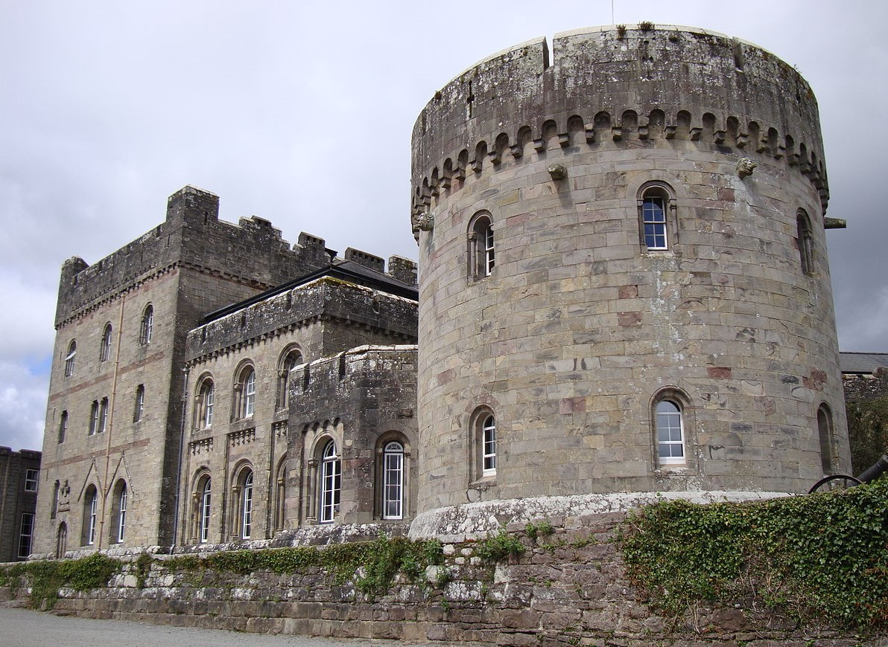

The family seat at Glenstal
Glenstal’s design is unique in that it contains a mixture of Anglo-Norman and Irish Romanesque architectural features. Norman Revival was the popular style for newly-wealthy families in the early 19th century who wanted to suggest the possession of an ancient lineage and Glenstal is a prime example of this.
Matthew Barrington's mind was set on a stately home for the family as early as 1818, when he built Barrington Bridge to access lands at Murroe. The site itself is in fact in Garranbane but he kept the name of neighbouring Glenstal. Matthew chose the then fashionable medieval revival style for the 'castle', a grand statement that would create the illusion of a noble past for their newly-bestowed barony. Throughout the 1830s, he commissioned a number of notable architects to submit Gothic-style concepts but he rejected all of them.
In 1835, he encountered English architect William Bardwell after he had gained prominence for submitting a Norman-style proposal for the Houses of Parliament competition. The two became friends and Matthew took Bardwell’s advice on design matters regarding Glenstal, envisioning a fake Norman castle, with an emphasis on ornamental defensive features. The two round Norman-style towers that form the entry to the courtyard and the large square keep were based on famous English castles, while the stables and outhouses were incorporated into the east side, with the living quarters on the west, giving the illusion of an even bigger residential building.
Because of economies made during the build, it was different from the initial concepts, yet it still gives the impression that it is a grand castle in a quadrangular enclosure, when it is in fact an open V-shape Victorian house. In keeping with the illusion that the building was older than it looked, the house was furnished with medieval-style furniture and even a soldier guarding the watchtower is made of stone. Stained glass, gargoyles and turreted stairways were all used to distance the Barringtons than their actual 17th-century ancestors.
Glenstal means The Glen of the Stallion and is an English rendering of Gleann Stail. A painting of the mythical stallion of the glen hangs on the wall, while family crests and mottos were also carved on walls, again to make it look ancient.
Anglo-Irish fantasy
Henry II and Queen Eleanor appear at the main door of Glenstal, again linking the building to 12th-century Norman antiquity. Charlotte Barrington’s dowry, like Aquitaine, brought significant wealth and funded much of the castle, sufficiently enough for the Barrington crest to be altered to include the Hartigan lion. Their inclusion, as the parents of King John, also creates the illusion of a link to the Norman King John’s Castle in Limerick City.
Glenstal’s stairs and door surrounds include decorative carvings in the Irish Romanesque style, typified by the round arch. The most elaborate Romanesque doorway is a copy of the portal at Killaloe Cathedral in Clare. Similar doorways occur at Adare Manor and in both cases the influence has been attributed to Edwin Wyndham-Quin, the Earl of Dunraven (1812–71) and Matthew Barrington’s friend. The earl believed that it marked the final resting place of Murtogh O’Brien, high king of Ireland in 1100, and noted a friendship between him and Henry I.
Bardwell made me
Specifications for the castle were greatly redrafted and costs cut to the extent that work did not cease on Glenstal until 1860. Matthew Barrington allowed 'Bardwell me fecit' (Bardwell made me) to be carved on the stone tower, followed by the year 1839, which was made to look like 1139, a further reference the Anglo-Norman era and a nod to his friend. However, after 1839, Bardwell’s responsibilities were increasingly delegated to Irish supervisors and craftsmen and it was during this period that the castle took on more Irish design features. Bardwell's original drawings show no Hiberno-Romanesque features and the interior carvings have been instead attributed to the influence of Wyndham-Quin.
Today
In 1925, following the death of his daughter in an ambush during the Irish War of Independence, Sir Charles Barrington offered Glenstal Castle to the Irish Free State as an official residence for any future head of state. He and his wife, Lady Mary Rose Barrington, decided to return to live on their English estate.
WT Cosgrave personally conducted "an exhaustive survey" of the castle but, ultimately, the vice-regal lodge at Phoenix Park (now Áras an Uachtaráin) was chosen. The property was bought by a local priest, who invited the monks of Maredsous Abbey in Belgium to settle in Glenstal. Monastic life there began formally on December 18, 1927. It remains in their care to this day and is now known as Glenstal Abbey, a private boarding school.
The origins of the school lie in the school for arts and crafts that was opened by the monks in 1928. A secondary school for boys was opened in September 1932, with Fr Columba Skerret OSB as the headmaster, with just seven boys on the roll. When Fr Matthew Dillon OSB, who served as headmaster twice from 1937-1948 and from 1953 to 1961, took over, he increased the number of boys to more than one hundred. Today it boasts a roll-call of 255 students.